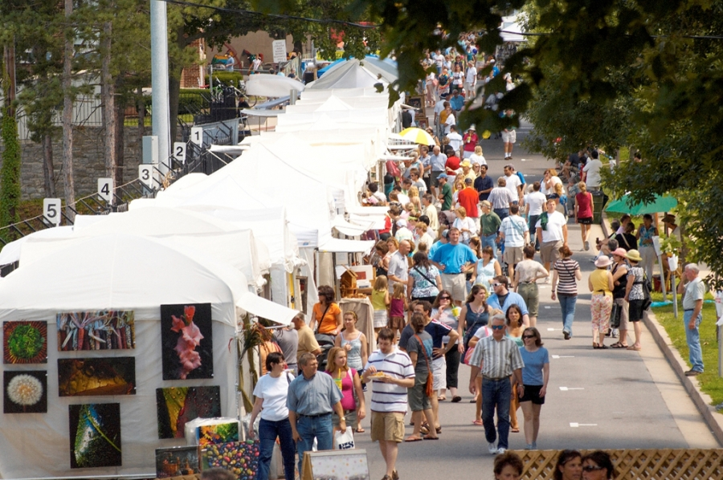
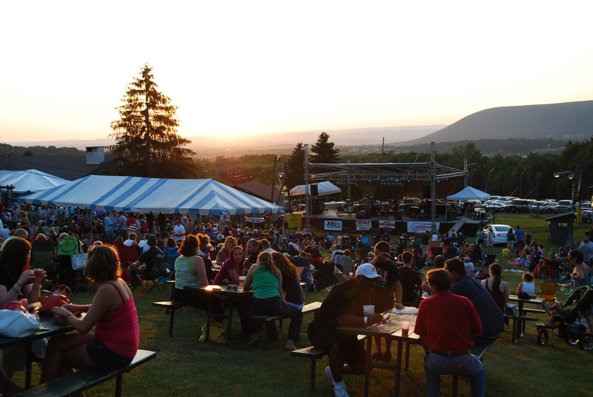
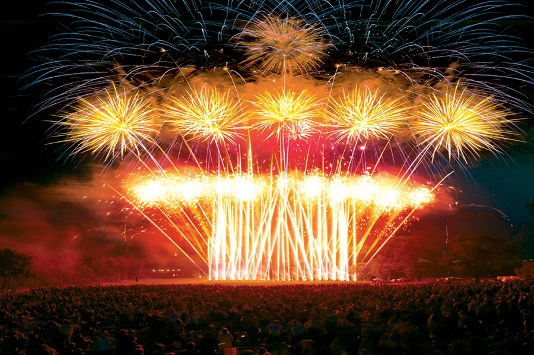
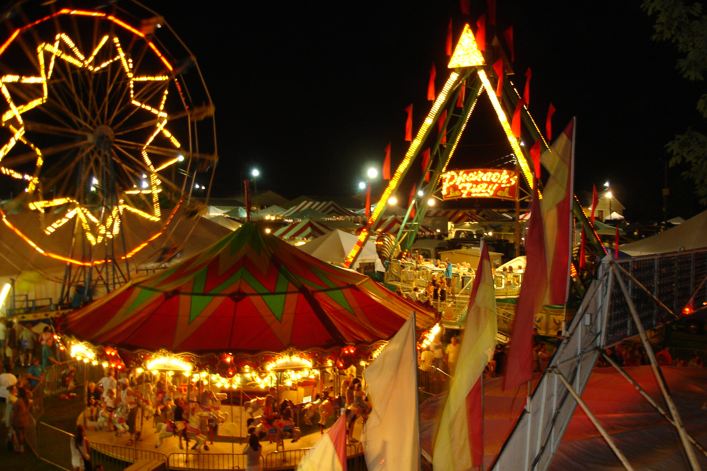

The 49th annual Central Pennsylvania Festival of the Arts™ will take place Wednesday, July 8 through Sunday, July 12 on the streets of downtown State College and the adjacent Penn State campus.
Founded by the State College Chamber of Commerce and Penn State’s College of Arts and Architecture, the Festival attracts about 125,000 visitors each summer. The Festival features the nationally recognized Sidewalk Sale and Exhibition, a juried gallery exhibition, Children and Youth Day, the Downtown State College Italian Street Painting Festival, educational opportunities, music, dance and theatrical performances in a variety of outdoor and indoor venues.

If you’ve been looking Thursday night plans, then look no further.
Every Thursday for the remainder of the summer, Tussey Mountain is hosting its annual WingFest, an event that pins local restaurants against each other to fight for the title of best wings in the area.
Each Thursday, four local restaurants prepare their wings for guests, who then serve as judges and vote for their favorites. Once the guests find a sauce that they believe is best, they fill out a voting sheet and submit it before they leave.
The restaurant that receives the most winning votes from each week moves on to the finals, which will be held on Aug. 28.

Each year the audience anticipates a spectacular fireworks display to celebrate the birth of our country. The 4thFest has been rated among the top five Largest, Biggest, Best 4th of July Fireworks show in the United States.

The nation's only fair and encampment. Annual event held the week prior to Labor Day. Contests, animals, exhibits, farm equipment, food, rides, camping. "A Family Tradition" -- The Centre County Grange Encampment and Fair, better known as "The Grange Fair," is a city within a town, as campers "move into" the Grange Park in Centre Hall, PA to live for more than a week. Enjoy the grandstand, southside stage, jubilee grove, entertainment, nationally known entertainment, entertainment is included in the price of the ticket. Numerous exhibits, some sale items and some competition exhibits featuring the most talented artists, craftsmen, cooks, and bakers around! 980 tents, 1,500 campers. Keep the fairgrounds in mind as a camping retreat during Penn State home football weekends and other times of the year!